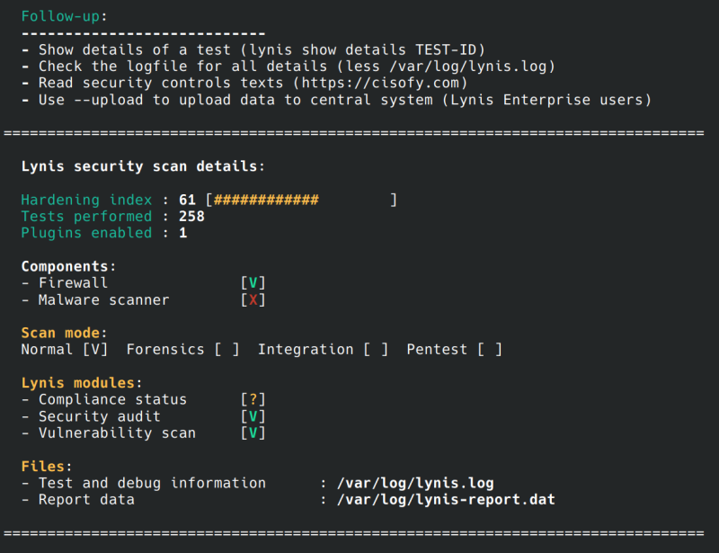

In this phase, a full system security audit was conducted using Lynis. The tool evaluates system configuration, security controls, and hardening levels to identify potential vulnerabilities.
The scan analyzed system services, file permissions, authentication mechanisms, and security policies. The results provided a hardening index and highlighted areas for improvement.
Figure: Output from Lynis security audit showing system hardening score and checks.
Conducting a full system audit confirmed that previous security configurations, including firewall rules and SSH hardening, were correctly applied. The audit provided actionable insights to further strengthen the system against threats.